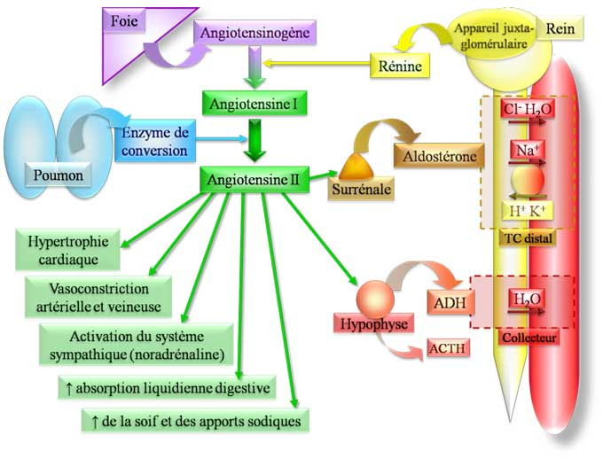

Système Rénine-Angiotensine-Aldostérone (-ADH) : SRAA(A)

La rénine est synthétisée par l’appareil juxta-glomérulaire au niveau rénal. Sa sécrétion est sous la dépendance :
- de la pression au niveau de l’artère rénale
- de la concentration de sodium au niveau de la macula densa